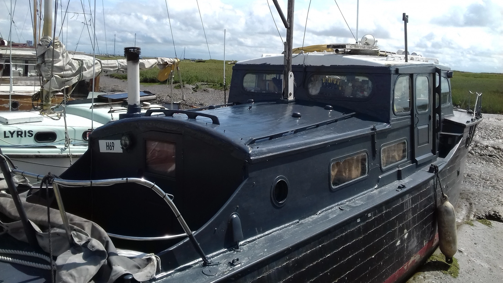
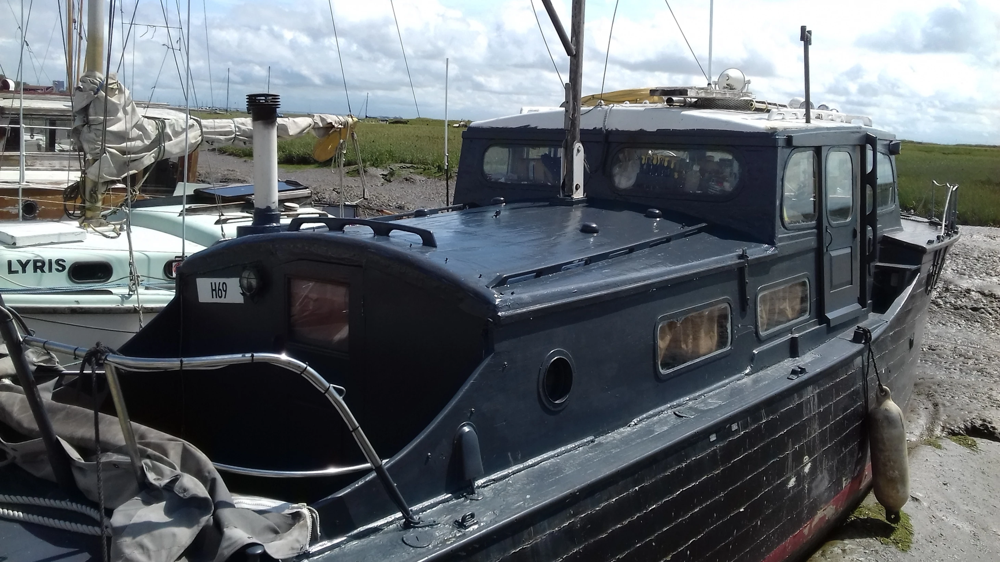

Gerfalcon, built in 1937 by William Osborne of Littlehampton, is a 34-foot motor yacht renowned for its rich history and robust construction. Initially a private leisure craft, Gerfalcon was requisitioned by the Royal Navy in June 1940 for the Dunkirk evacuation. Post-war, it changed hands several times and has undergone several restorations, participating in significant events like the Queen's Diamond Jubilee Pageant in 2012[25†source].


Operation Dynamo, also known as the Miracle of Dunkirk, saw over 338,000 Allied soldiers evacuated from the beaches of Dunkirk, France, between 26 May and 4 June 1940. Among these heroic vessels was Gerfalcon, a motor yacht built in 1937. As a designated Dunkirk Little Ship, Gerfalcon played a crucial role in ferrying soldiers from the beaches to larger ships waiting offshore. This effort epitomised the "Spirit of Dunkirk," symbolising bravery and resilience during one of World War II’s most critical moments.
Gerfalcon, a 34-foot motor yacht with a mahogany on oak hull, has been meticulously maintained to preserve its design and wartime heritage. Recognised on the historic ships register, Gerfalcon continues to capture the imagination of history enthusiasts. Its preservation provides a tangible link to the past, commemorating its significant contribution during the Dunkirk evacuation[21†source][25†source].
In recent years, Gerfalcon has not weathered well and requires significant restoration work to preserve its historic integrity. The vessel, despite meticulous previous efforts, now shows signs of wear and deterioration that necessitate careful attention. This restoration work will ensure that Gerfalcon continues to stand as a testament to its wartime service and maritime heritage, safeguarding its legacy for future generations.

Gerfalcon was recently purchased via Dean and Holland Yacht Brokers in the following condition:

 



The ship exchanged hands on 8th July 2024 via the Broker Holland and Dean in Essex. The advertisements are shown below:


The boat was originally ordered for recreational use by Royal Navy Commander Valentine Searles-Wood of Waterlooville, Hampshire. Gerfalcon is now privately owned for recreational use by Lieutenant (VCC) Gary Fletcher RN and is currently laid up in Essex where she will be taken out of the water, surveyed and remedial works undertaken to get her back to her former glory. Lt Fletcher hopes to return the boat to Hampshire, Gosport once seaworthy.

Commander Valentine Searles-Wood Royal Navy was born on 23rd June 1892. He served as an officer in the Royal Navy during WW1, being the commander of HMS Harpy on 5th November 1918. He rose to the rank of Lieutenant Commander on 15th April 1923, placed on the retired list with rank of commander on 20th August 1935. When WW2 broke out, he was called back into service and commanded 25 group of anti-submarine trawlers from 12th to 23rd October 1939, after this he was placed in command of the armed yacht St Modwen. He reverted to the retired list on 13th February 1940. His death was recorded at Blandford Forum in April 1943.
Gary is a dedicated volunteer and coach with notable achievements in maritime research and paddlesports, including solo crossings of the English Channel and leading Arctic expeditions. As VCC Deputy Commander, he brings extensive experience from his Teaching and Research Fellowship at Imperial College London. His professional background includes technology consultancy for central government and global deployments, such as Diego Garcia and Buckingham Palace, highlighting his diverse expertise and commitment.
Ship registration records:


After its valiant service at Dunkirk, Gerfalcon was immediately conscripted into the Royal Navy, serving as a patrol auxiliary vessel. Although its tenure with the Royal Navy was brief, lasting only from June to August 1940, this period remains a significant chapter in its storied history. The decision to restore Gerfalcon in its Royal Navy patrol boat colours is grounded in several compelling reasons:
By keeping Gerfalcon in its Royal Navy patrol boat colours, we ensure that its complete story is preserved and honoured, celebrating not only its contribution to Operation Dynamo but also its service in the Royal Navy. This decision is a homage to the ship's multifaceted history and a commitment to preserving our maritime heritage for future generations to appreciate.


Feel free to contact the new Skipper, Gary Fletcher, for any questions or interest skipper@gerfalcon.navy. For more information on Gerfalcon and other Dunkirk Little Ships, visit the Association of Dunkirk Little Ships or National Historic Ships.